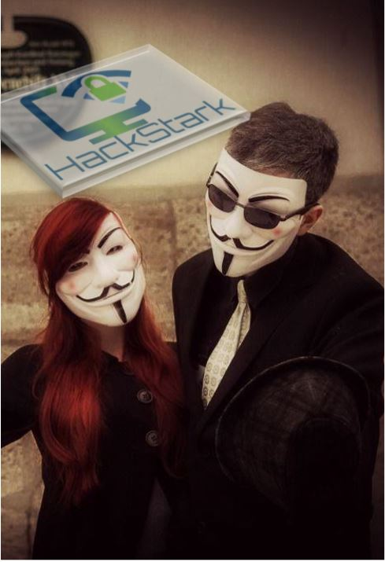

Active in practical security learning since the community’s early profile.
Cybersecurity • Education • Open Source
Learn cybersecurity.
Build skills. Defend better.
HackStark is a learning and open-source community making ethical hacking, network defense, IoT security, OSINT and responsible security research practical and accessible.
Watch practical tutorials
Authorized learning environment
HS / 01
Security mindset
Learn → Validate → Defend
01 Open-source projects
02 Practical tutorials
03 Ethical security research
04 Community learning
Who we are
Cybersecurity knowledge through practice.
HackStark is an independent cybersecurity learning community that turns technical security concepts into clear, practical education through demonstrations, tutorials, open-source projects and responsible research.
We explore ethical hacking, network reconnaissance, Linux security, IoT, OSINT, vulnerability assessment, security automation and defensive cybersecurity—with authorization and responsible use at the center.
The original HackStark profile traces the community to 2015 and describes a goal of helping people understand what they can do with their gadgets, improve their internet skills and build clearer concepts about hacking and the internet.
No previous programming experience is required to begin the learning path.
Connected devices and penetration-testing knowledge shaped HackStark’s early focus.
Open-source resources spanning Linux, programming and security education.
Official videos currently collected in the HackStark Academy section.
Learn
Turn complex cybersecurity ideas into understandable, practical learning.
Build
Create tools, labs and open-source projects that reinforce technical skills.
Secure
Promote defensive thinking, authorized testing and responsible practice.
Share
Grow skills together through accessible resources and open knowledge.

The identity
Curiosity with a clear ethical boundary.
The original HackStark visual reflects the curiosity, privacy awareness and hands-on mindset that shaped the community. Today, that energy is focused on practical education, defensive research and learning in authorized environments.
- 01Question systemsUnderstand how technology works before testing it.
- 02Practice responsiblyUse isolated labs, owned systems and explicit permission.
- 03Share defensesTurn discoveries into safer tools and clearer education.
Our mission
Move beyond theory.
Help cybersecurity learners build practical, responsible and accessible skills through authorized experimentation, ethical conduct, defensive thinking and continuous learning.
Vision / 2026+
Build a technically skilled community capable of understanding modern cyber threats and creating safer digital environments.
What we explore
Core focus areas
Skills and disciplines for understanding systems, assessing risk and building stronger defenses.
01
Ethical Hacking & Penetration Testing
Authorized testing methodology, reconnaissance and vulnerability validation in controlled environments.
- Methodology
- Vulnerability assessment
02
Network Security
Network discovery, infrastructure security, protocol analysis and defensive monitoring.
- Nmap
- Protocol analysis
03
IoT & Wireless Security
Embedded devices, wireless networks and authorized IoT security assessment.
- Wireless labs
- Device security
04
OSINT & Reconnaissance
Responsible collection and analysis of publicly available information.
- Footprinting
- Open-source intelligence
05
Security Automation
Python and scripting for reconnaissance, network analysis and repeatable security workflows.
- Python
- Workflow automation
06
Linux & Security Labs
Kali Linux, virtualization, security tooling and controlled laboratory exercises.
- Linux
- Virtual labs
Suggested learning path
From first lab to defensive practice.
The broader historical curriculum is organized here as a safe, modern roadmap. Every practical exercise belongs in an isolated environment or on systems you are explicitly authorized to assess.
- 01Prepare the lab
Virtualization, Kali Linux setup, repositories, networking basics and ethical-hacking foundations.
- 02Understand exposure
Footprinting, lawful OSINT, network scanning, enumeration and vulnerability analysis.
- 03Strengthen defenses
Traffic analysis, malware awareness, social-engineering defense, availability, sessions, IDS, firewalls and honeypots.
- 04Explore specializations
Web applications, wireless, mobile, IoT, cloud platforms, cryptography and security automation.
Built in the open
Open-source projects
Explore HackStark's public repositories and educational security projects.
Public repository
FastestRepositoryForKali
Kali Linux repository configuration resource designed to help users configure efficient package sources.
View repository
Public repository
fastrepo4kali
Repository configuration utility for optimizing Kali Linux package repository setup.
View repository
Learning resource
C++ Basic Structure Cheat Sheet
A concise C++ basic structure and syntax reference created for new programmers.
View resource
Lab only
slowlorisdos
Controlled-lab security research for understanding slow HTTP connection behavior and web-server resilience.
Authorized laboratory research only.
View research repository
Education
SubstitutionCipher
Educational Python implementation demonstrating classical substitution-cipher concepts.
View repositoryStatic project information is always available. Current public metadata may be added from GitHub when your connection allows.
HackStark Academy
Learn through practical demonstrations.
Guided security concepts and lab-first walkthroughs designed to help learners understand the why—not just repeat the steps.
 01
01
Network security
NMAP Network Scanning Demo
Host discovery, ping scanning and open-port identification with Nmap.
 02
02
Web security
XSS Reflected Attack Demonstration
Reflected XSS concepts in controlled and authorized environments.
Educational security testing only. 03
03
OSINT
SpiderFoot OSINT
An introduction to OSINT automation and reconnaissance with SpiderFoot.
 04
04
Reconnaissance
Enumeration & Footprinting
The role of enumeration and footprinting in authorized assessments.
 05
05
Network security
Network Scanning
Foundational scanning concepts and practical security reconnaissance.
 06
06
Ethical hacking
Information Gathering
Information gathering within an ethical penetration-testing workflow.
 07
07
Foundations
Introduction to Ethical Hacking
Responsible testing and core security concepts for beginners.
 08
08
Kali Linux
Kali Repository & Root User Setup
Package repository and administrative environment concepts.
 09
09
Security labs
Install Kali Linux on VMware
Build a virtualized cybersecurity learning laboratory step by step.
 10
10
Course
Introduction to Ethical Hacking Course
An introduction to HackStark's ethical hacking learning series.
Founder / Lead
4+ years cybersecurity & IT experience
Founder & lead
Meet the founder
Muhammad Ahmed Talha
Founder & CEO — HackStark • Cybersecurity & IT Infrastructure Professional
Muhammad Ahmed Talha has 4+ years of hands-on experience across penetration testing, Red Team operations, vulnerability assessment, network and systems administration, security education and open-source tool development.
He holds a BS in Cyber Security from The Islamia University of Bahawalpur, RYK Campus (2020–2024). Most recently, he served as IT Assistant Manager at Toyota Royal Motors from March 2025 to August 2026.
In August 2026, he was invited as a Cyber Security Panelist and Speaker at the BZU Multan CIT Conference, discussing AI-enhanced threats, quantum-computing risk and stronger human cyber defenses.
3,000+Students trained
10+Security tools & projects
2026BZU Multan panelist
Join the community
Learn, build & connect
Choose the channel that fits how you learn—from source code and practical videos to discussion and updates.
Permission first
Responsible security
HackStark publishes cybersecurity content for education, defensive research and authorized security testing. Security techniques should only be used on systems, networks, applications or devices you own or have explicit permission to assess.
HackStark does not encourage unauthorized access, disruption, data theft or malicious activity.
Start a conversation
Connect with HackStark
Have a question about our educational content, open-source projects, community or cybersecurity learning resources? Connect with HackStark through our official channels.
Organization emailhackstarkofficial@gmail.com
Your next step / Starts here
Ready to start learning?
Explore practical cybersecurity resources, open-source projects and educational demonstrations from HackStark.